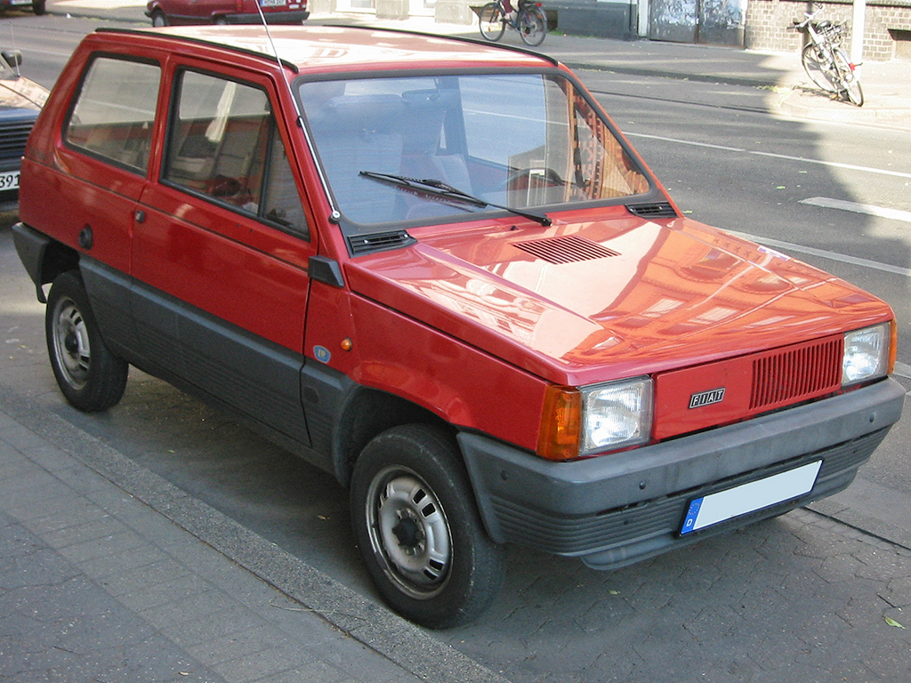

Modell: Fiat 500
Baujahr: 1957-1975
Produktionsstückzahl: 3,900,000+
Motor: 2-Zylinder, 0.5L
Leistung: 13 PS
Höchstgeschwindigkeit: 85 km/h
Modell: Fiat 124
Baujahr: 1966-1985
Produktionsstückzahl: 6,000,000+
Motor: 4-Zylinder, 1.2L
Leistung: 60 PS
Höchstgeschwindigkeit: 140 km/h
Modell: Fiat 128
Baujahr: 1969-1985
Produktionsstückzahl: 3,000,000+
Motor: 4-Zylinder, 1.0L
Leistung: 60 PS
Höchstgeschwindigkeit: 145 km/h

Modell: Fiat Panda
Baujahr: 1980-2003
Produktionsstückzahl: 6,000,000+
Motor: 4-Zylinder, 0.9L
Leistung: 45 PS
Höchstgeschwindigkeit: 130 km/h